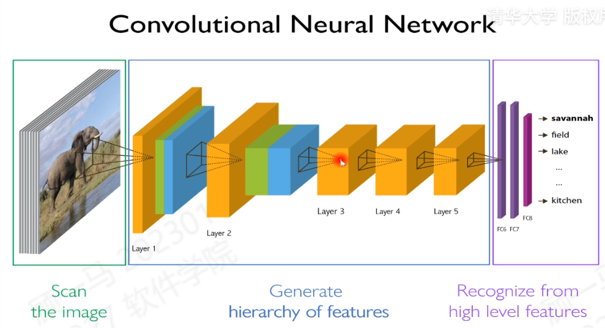
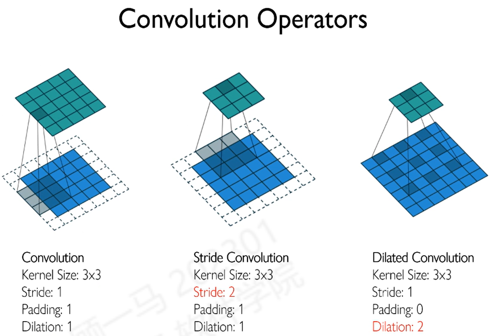
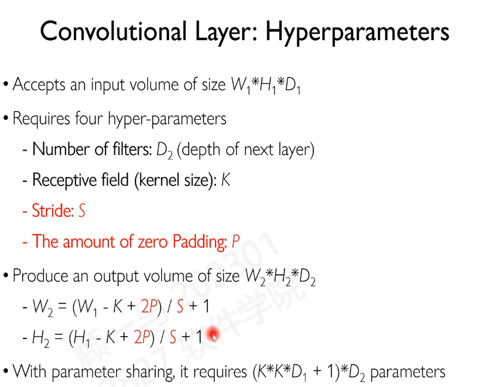
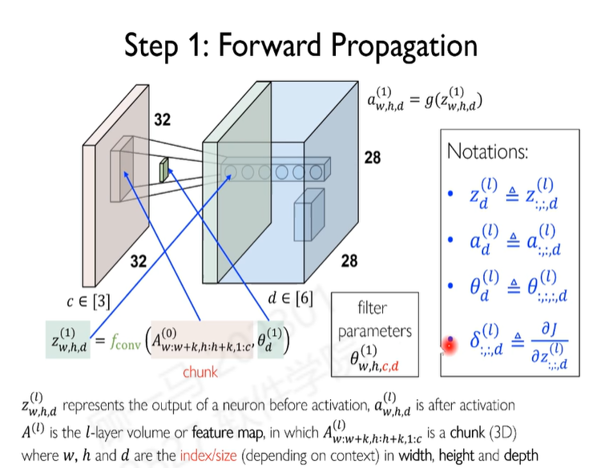
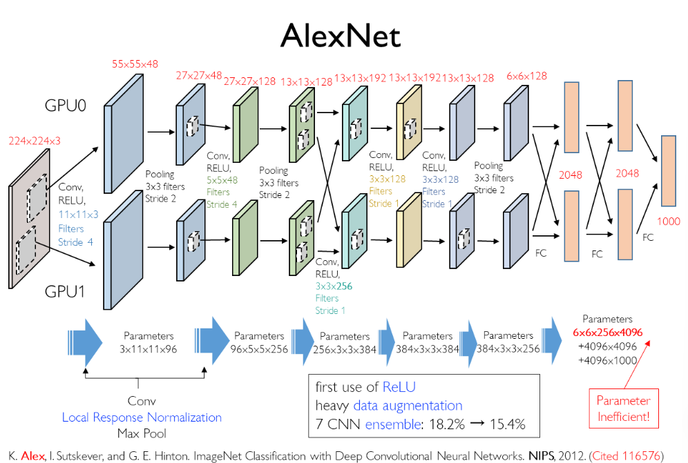
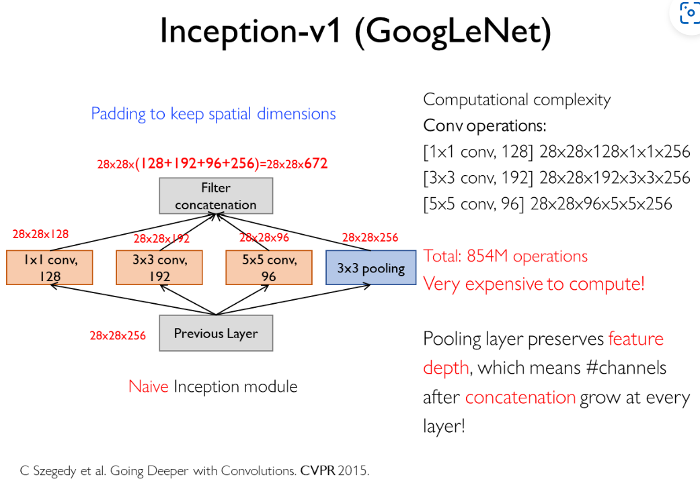
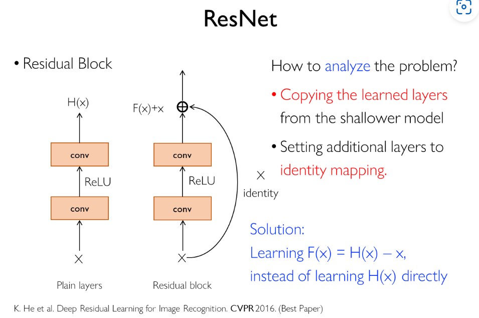

DL Note-3 CNN
Convolutional Neural Networks
卷积神经网络（CNN） 的灵感源于生物视觉系统，其设计初衷就是为了高效处理图像数据。早期的成功应用主要集中在物体识别领域，而更深层次的物体关系推断，至今仍是计算机视觉的前沿挑战。
在生物的研究中，存在感受野receptive field的概念，这是指神经元对于输入的局部区域的敏感程度。在卷积网络中，我们也引入了这个概念。相邻的神经元处理的是相邻的图像区域，这样的设计使得网络能够捕捉到图像的空间结构。在模拟人类的视觉系统中，重要的是提取不同程度的特征，这就是卷积网络的核心思想。
与 多层感知机（MLP） 不同，MLP在处理图像时通常会将二维像素数据展开为一维向量，这导致了关键空间信息的丢失。因此，MLP在面对视角、光照等变化时，性能会显著下降。而CNN通过其特有的卷积操作，能天然地保留并利用这些空间信息，使其在处理这类挑战时表现出更强的鲁棒性。
从左到右，逐步提取的是从较低到较高的层次特征。在不同的任务中使用不同的特征。从低级特征（如边缘、纹理）逐步构建出高级特征（如眼睛、鼻子等），最终实现对物体的识别。
Local Connectivity
在卷积网络中，一个神经元并不会像在全连接网络中那样连接到前一层的所有神经元。相反，它只关注并连接到前一层中的一个局部区域。这种设计模拟了生物视觉系统中神经元的感受野，让网络能够高效地捕捉图像的局部特征，如边缘、纹理等，同时大大减少了需要训练的参数数量。
Parameter Sharing
参数共享是卷积网络的另一大核心特征，它实现了平移不变性（translation invariance）。具体来说，用于提取某种特定特征（例如一个垂直边缘）的一组参数（即一个卷积核）会在图像的所有位置上被重复使用。这意味着，无论这个特征出现在图像的哪个位置，它都能被同一个卷积核有效地检测出来。这种机制不仅使网络对物体在图像中的位置变化具有鲁棒性，还进一步大幅降低了模型的复杂度。
Convolution
是输入的图像，是卷积核，卷积操作定义为：
Continuous function :
Discrete function :
上述操作的目的为对于输入函数
Cross Correlation
互相关用来分析两个信号的相似性，定义为：
Continous function :
Discrete function :
对于卷积和互相关的关系为：
事实上，在卷积网络中使用的是互相关操作。
Notation
- 输入的图片一般为三层，分别为RGB。这个Volume是一个张量Tensor。
- 卷积核的大小为（举例），即3个通道，每个通道大小为。然后在整个图片上进行平移，计算卷积操作。（类似于卷积的定义）
- 卷积的计算操作为：卷积核在图片上平移，计算对应位置的乘积和。
上面的公式是在移动到某个位置的时候，计算对应位置的乘积和。然后将结果存储在一个新的矩阵中。
虽然我们常将此过程概念化为卷积核在图像上的“滑动”（一种串行算法），但现代深度学习框架早已摒弃这种低效方式。为了实现惊人的速度，系统会为每一个局部感受野分配一个“神经元”，并行计算所有位置的点积。正是这种大规模的并行架构，使得CNN能够在GPU上高效处理海量图像数据。
对于一个尺寸为（宽 × 高 × 通道数）的输入，使用个卷积核（其中 D 是卷积核的数量），得到的输出特征图尺寸为：
举例说明： 如果原始输入图像（或前一层的特征图）为，使用的卷积核，那么输出的宽度和高度为。如果您使用了6 个卷积核（即），最终得到的特征图尺寸就是 。
对于一个的输入，使用个卷积核，得到的输出的特征图的大小为，参数量为。
CNN大部分的显存占用并非用于存储权重，而是用于存储在反向传播过程中所需的庞大中间特征图。这也是深度学习高度依赖GPU加速计算的主要原因。
Dilated& Stride Convolution
在卷积操作中，我们可以使用不同的步长来进行卷积操作。步长（Stride） 定义了卷积核在输入张量上移动的间隔距离。这样的操作会改变输出的大小。当步长 时，卷积核逐像素移动，输出特征图的尺寸变化较小。然而，当时（例如），卷积核会“跳跃”移动，这是一种高效的下采样（Downsampling） 机制。
作用：
- 迅速缩小特征图尺寸： 步长S=2 能将输出特征图的宽度和高度大致减半，从而减少计算量和内存占用。
- 增加鲁棒性： 通过空间降维，模型对输入微小变化（如平移）的敏感度降低。
对于一个的输入，使用的卷积核和步长，输出的尺寸变为
空洞卷积（Dilated Convolution），也被称为扩张卷积或带孔卷积，是一种在不引入额外参数和不改变特征图空间分辨率的前提下，有效扩大感受野的强大工具。
核心机制：
它通过在卷积核的权重之间插入零值来实现“扩张”。扩张的程度由扩张率（Dilation Rate） R 控制：
- R=1 (1-dilated)： 等同于标准的卷积操作。
- R=2 (2-dilated)： 卷积核的采样间隔为 2，等效于在一个更大的区域内稀疏地采样输入。
价值所在：
- 指数级增大感受野： 空洞卷积允许模型在不损失任何空间信息（即不进行下采样）的情况下，捕获更广阔的上下文信息，这在图像分割、目标检测等需要精确定位任务中至关重要。
- 保持分辨率： 相比于大步长卷积，空洞卷积能够维持高分辨率的特征图，避免信息被过早压缩。
Activation Functions
在卷积网络中，激活函数可以使用ReLU函数，这样的操作可以避免梯度消失的问题。有时候使用的是Leaky ReLU函数，这样的操作在某些模型中可以减少神经元死亡的问题。

| 超参数 | 符号 | 描述 |
|---|---|---|
| 滤波器数量 | 决定输出特征图的深度（通道数）。 | |
| 感受野 | 卷积核的尺寸（）。 | |
| 步长 | 卷积核的移动间隔，用于下采样。 | |
| 零填充量 | 在输入边缘添加零的数量，用于控制输出尺寸。 |
Padding
在不使用任何填充的情况下，卷积操作会导致输出尺寸小于输入尺寸，并且边缘像素被卷到的次数少于中心像素，造成边缘信息的丢失。为了解决这些问题，我们引入了填充（Padding）。
填充通常是在输入张量的边缘填充额外的零值（Zero Padding）。
常见策略：
- Valid Padding (无填充)： 不进行任何填充，输出尺寸自然缩小。
- Same Padding (等尺寸填充)： 通过计算所需的填充量 P（通常是 ⌊K/2⌋），确保卷积后的输出特征图尺寸与输入保持相同，这极大地简化了网络设计，尤其是在构建深度网络时。
Pooling
池化操作一般是用来减少空间尺寸，这样的操作可以减少参数量，减少过拟合的问题。
- Max Pooling：取局部区域的最大值
- Average Pooling：取局部区域的平均值
Spatial Pyramid Pooling：对于不同的通道进行池化操作，这样的操作可以增加特征的多样性。这是用来减少多尺度问题的。
在现实生活中，多尺度是一个基本的特征，例如在大气系统、气候系统中，有较大的气流和较小部分的湍流。
Back Propagation
Backpropagation, step-by-step | DL3
在卷积网络的前向传播中每一层的计算公式如下：
在一个具体的例子中，可以计算一个的图像在经过一个的卷积核得到的的特征图的计算过程。
- Consider single input channel :
- Expand above to be clearer:
对于上述的例子计算残差网络的过程为：
与全连接层的计算公式的不同在于，CNN是一个局部的计算过程，即每一个神经元的输出值并不会对后一层的所有神经元产生影响。
对于上述计算得到的残差，可以写成一个矩阵：
在上面的例子中，我们可以计算得到：
比较紧凑地写出：
其中是对卷积核进行旋转180度的操作。
对应的是两个矩阵的逐个元素乘
在有多张特征图的情况下（输出有个通道），输入的图像有通道，我们可以将上述的计算过程进行扩展，得到：
在计算目标函数对于参数的导数的过程中，我们可以得到：
可以更加详细地计算：
对于偏置项的计算过程为
从而可以使用动量的梯度下降的方法来进行参数的更新。
Invariance and Equivariance
对于不同的任务，有时候需要不变性和等变性。在图像处理中，对于图像的旋转、平移、缩放等操作，神经网络的输出应该是不变的。在神经网络中，可以通过数据增强的方法来进行处理。对于等变性，可以通过卷积神经网络来进行处理。CNN在设计的过程中，引入池化层pooling希望获得不变性。但是并没有获得很好的效果。
- Invariance：对于输入的变化，输出不变
- Equivariance：对于输入的变化，输出也会发生相应的变化
在实践中，有时候会有噪声、形变、翻转、光照条件、视角变化、遮挡、尺度变化、类内类间差距、奇异等问题。
Data Augmentation
在实践中，可以通过数据增强的方法来进行处理。对于图像的旋转、平移、缩放、翻转等操作，可以增加数据的多样性。在训练的过程中，可以使用不同的数据增强的方法来进行训练。用这样的方法期望获得一种不变性。
常用的方法有：裁剪、旋转、翻转、缩放、平移、仿射变换、弹性变换、颜色变换等。
CNN识别主要使的是纹理的识别方法，希望将人类的对于形状识别的能力融入到CNN中。可以使用的数据集为Augmentation by Stylization，希望获得模型对于纹理的不变性。
CNN对上下文是敏感的，对于经常出现在一起的事物，CNN可以很好地进行识别，但是对于不常见的事物，CNN的效果会变差。一种极端的方式是将不经常出现的东西组合在一起。目前的深度网络一定程度上利用了spurious correlation，从而进行bench mark在数据集上过拟和。
Architecture Revolution
MAGA Making convolutional networks shift-invariant again
该研究致力于解决标准CNN在面对输入平移时，难以保持平移不变性（Shift-Invariance）的问题。传统的CNN通过在池化（Pooling）操作前引入模糊（Blurring）等预处理步骤，可以在一定程度上增强网络的平移不变性。
Capsule Network
胶囊网络（Capsule Network）：标准CNN的一个主要缺陷是未能有效保持物体部件之间的相对空间关系。虽然分类任务通常需要平移不变性（Invariance），但像细粒度识别等任务则更强调平移等变性（Equivariance）。胶囊网络通过引入胶囊（Capsule）这一概念，使用向量而非标量激活来表示实体，有效地保持了部件之间的层级和相对关系，从而实现了更好的等变性。
CNN Architectures
AlexNet
- 一般会在输入层使用较大的卷积核，然后在后面的层使用较小的卷积核
- 通道数随着网络逐渐增加然后减少
- 第一次使用ReLU激活函数
- 使用了大量的数据增强Data Augmentation
- 使用GPU进行训练
- 采用SGD with momentum 0.9进行训练
- 使用dropout 0.5，一般在MLP层都需要使用dropout
- 使用0.01的学习率，然后在训练的过程中逐渐减小学习率，当loss不再下降的时使用学习率的0.1倍
ZFNet：优化输入层与特征深度
ZFNet（Zeiler & Fergus Net）是对 AlexNet 的一次重要优化，其设计重心集中于早期特征提取的质量。
- 输入层优化： ZFNet 发现，在网络的输入层使用更小的卷积核和更小的步长（Stride） 至关重要。过早使用大步长进行下采样（Downsampling）会导致高频细节和原始信息的大量丢失，影响后续层的特征提取能力。
- 中间层设计： 在网络深处，ZFNet 采取了增加通道数（Channel Depth） 的策略。增加通道数能够让网络学习并存储更多样化、更丰富的特征表示，有效提升模型的性能。
VGGNet
VGGNet（Visual Geometry Group Net）是另一个关键的贡献者，它通过规范化网络结构，探索了深度和卷积核尺寸之间的关系。
- 核心创新： VGGNet 提出了用多个 小卷积核堆叠来代替单个大卷积核的设计哲学。例如，使用三个 的卷积层，其感受野等效于一个 的卷积层。
- 优势总结：
- 参数效率： 多个卷积层的总参数量远低于一个卷积层，显著减少了模型复杂度。
- 增加非线性： 堆叠操作引入了更多的激活函数（如 ReLU），从而增加了网络的深度和非线性表达能力。
- 设计原则： 这一发现确立了“一个较大的感受野可以通过多个较小的感受野高效替代”的设计原则。
- 设计演变的反思： 尽管 VGGNet 的原则影响深远，但在现代架构中，设计者发现一味排斥大卷积核并不总是最优。出于计算速度和硬件加速等实际考量，一些现代网络（如 Inception 的后续版本）在特定层级又开始重新使用和优化较大尺寸的卷积核。
NIN Network in Network
在使用全连接层时，会有较多的参数，基于这样的思路提出卷积这个操作。这样的操作只改变通道数，不改变空间尺寸，通常在不希望改变空间尺寸而增大通道数的时候可以使用。
在使用卷积增加步长、使用pooling层时候，会导致信息的丢失。在NIN中希望获得一个尺寸小但是通道数多的特征图。在NIN中使用了的卷积核来增加通道数，这样可以使用空间全局池化。例如一个的特征图，使用的全局池化，可以得到一个的特征图。
- 传统CNN末尾通常使用全连接层（FC）进行分类，但全连接层参数量大，易过拟合。
- 全局池化可直接将特征图转换为通道维度的向量（如 1024维向量），再接一个分类层，大幅减少参数。
GoogLeNet
这是一个较为深的网络，删去了全连接层，参数量是较小的。
- 引入Multi-passway，使用多路的卷积核来提取特征。采用了特征增广Feature Augmentation的方法。
- 在特征图通道数目不一样的情况下，使用padding的方法。
- 核心思想： 这个版本首次提出了 Inception 模块的概念，其特点是并行使用多种不同尺寸的卷积核（1x1, 3x3, 5x5）和一个池化层，然后将它们的输出特征图拼接（concatenate）在一起。
- 关键创新点（如图所示）： “瓶颈层”（Bottleneck layers） 的使用。在进行计算量较大的 3x3 和 5x5 卷积之前，先用一个 1x1 的卷积来减少特征图的通道数（即“降维”）。
- 带来的好处： 正如文字说明指出的，这个“瓶颈”设计极大地降低了计算复杂度。图中的例子显示，计算量从原始的 8.54 亿次操作降低到了 3.58 亿次，这使得构建更深的网络成为可能。
这个版本在 v1 的基础上引入了两项重要改进：
- 批量归一化 (Batch Normalization, BN)： 这是一项关键技术，被加入到模型中。BN 的作用是加速深度网络的训练过程，并使损失函数的曲面更平滑，从而让训练更稳定、更快速。
- 卷积分解（第一部分）： 将一个 5x5 的卷积分解为两个堆叠的 3x3 卷积。这样做在保持感受野（即滤波器能“看到”的输入图像区域）不变的同时，有两个主要优势：
- 参数量比单个 5x5 卷积更少。
- 增加了网络深度和非线性变换的次数，有助于提升模型的学习能力。
该版本通过更彻底的卷积分解 (Convolution Factorization) 来进一步优化网络结构：
- 非对称卷积 (Asymmetric Convolutions)： 将一个
n x n的卷积分解为一个1 x n卷积和一个n x 1卷积。例如，一个 3x3 的卷积可以被一个 1x3 的卷积和一个 3x1 的卷积替代。 - 带来的好处： 与标准的
n x n卷积相比，这种分解方式能进一步显著降低计算成本和参数数量，同时允许网络结构变得更深。
使用计算量越来越小的卷积核，使用计算量越来越小的卷积核，使用越来越多的层数，使用越来越多的通道数。
Highway Network
在平坦的网络通路中，可能有信息通路瓶颈问题。在Highway Network中，引入了门控机制，这样的操作可以使得信息的流动更加顺畅。
其中是一个MLP，是一个门控函数，这样的操作可以使得信息的流动更加顺畅。
-
: 输入向量。
-
: 非线性变换（如全连接层或卷积层）。
-
: Transform Gate（变换门），控制非线性变换的权重，通常用Sigmoid激活（输出值在0到1之间）。
-
: Carry Gate（携带门），控制原始输入 x 的权重。通常设定为 ，以减少参数量。
-
当 时，输出，即当前层几乎不进行变换（信息直接跳过该层）。
-
当 时，输出，即信息完全经过当前层的非线性变换。
-
通过这种方式，网络可以自适应地选择浅层或深层的特征。
动机是在网络中提高信息的流动性
- ResNet：使用恒等跳跃连接Identity Skip Connection，公式为 ，无门控机制。
- Highway Network：通过门控动态调节跳跃连接的权重，更灵活地控制信息流。
ResNet
- 56层的模型比20层的模型效果更差，既然如此，先将20层的模型训练好，然后再增加36层的identity网络，之后再训练整个网络。发现这样的操作的效果反而更差。得出的结论是56层的网络更加难以训练，网络的拟和能力不足。平坦的网络很难拟和
- 残差是更加容易拟和的。
- 继续将这些残差网络堆叠在一起，可以得到一个更深的网络。
- 卷积、池化是算子operator，残差是一个块block，网络是一个层layer
LandScape Visualization
[1712.09913] Visualizing the Loss Landscape of Neural Nets
Lightweight for Deployment
Pruning
卷积神经网络是一个很适合做剪枝的网络。说明神经网络的有很多的参数是冗余的。剪枝配合上重训练可以减少网络的参数量，并且在一定的程度上提升网络的性能。
Quantization and Encoding
k-means算法可以将权重量化，将权重量化为几个值，这样的操作可以减少网络的参数量。在实际的操作中，可以将权重量化为8位，这样的操作可以减少网络的参数量。
编码操作，如Huffman编码，可以减少网络的参数量。
[1510.00149] Deep Compression: Compressing Deep Neural Networks with Pruning, Trained Quantization and Huffman Coding
神经网络一般是在训练的时候使用较大的网络，然后再裁剪为较小的网络，反之效果不一定会好。
我们相信在裁剪的过程中，保留下来的参数是重要的参数，这样的操作可以提升网络的性能。在实验中
[1803.03635] The Lottery Ticket Hypothesis: Finding Sparse, Trainable Neural Networks
先设计一个较小的网络，之后推广到较大的网络。在实际的操作中，可以使用较小的网络，然后再增加网络的深度。这种设计是硬件友好的，由于这样的设计是计算对齐的。
Group Convolution
标准的卷积层有这样的不足：对于不同的输入通道，后面的输出都使用到了所有的输入通道。在Group Convolution中，将输入通道分为几个组，然后对于每一个组使用一个卷积核。这样的操作可以减少网络的参数量，减少计算量。
但是通道之间不交流，这样的操作可能会导致网络的性能下降。
Depthwise Separable Convolution
- 引入了卷积核pointwise，这样的操作可以减少参数量
- 令通道数等于分组数目channelwise or depthwise
上述两个算子是轻量化网络的基础。

[2201.03545] A ConvNet for the 2020s

宏观设计：减少空间尺寸的衰减有利于学习不同的特征。